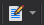

Lab 1 - Working With Stata
Introduction to Using Stata
Let’s start with some simple graphs in Stata. We will begin by looking at the distribution of time spent on homework across the country. The data used in this class exercise comes from the American Time Use Survey1, which I have used in my own research (you can read it here). But before we begin, let’s get a brief tour of Stata and set up our workspace for a productive flow of our work.
Workflow in Stata
Our workflow in Stata begins with good file structures and keeping our files organized. Approaches to this vary and if you continue to work in research or analysis, you will find approaches that work best for you. We will set up a simple file system that will help us stay organized for the purposes of this class.
Windows
If you are working with a Windows computer, you will start by clicking on the File Explorer () icon in the bottom of your screen and in the USB drive or primary drive you will be using, create a folder for the class and subfolders for data, do files, logs, and output.
Select the Drive for your class folder.

Set up a class folder in the drive you chose. Name it rpad504.
In your class folder, set up a folder structure with these subfolders. Use the same names.
Now, we are going to put the data for the class lab into our new data subfolder.
- Open the data subfolder you just created and leave your file explorer open.
- In your web browser, where you are reading this, right-click on the “Labs” tab at the top of the page and select “Open in New Tab.”
- Click “Data for Lab 1.”
- Click the Download () button, select “Save File”, and then click OK.
- In Firefox, click the Blue Arrow in the top right and then click on the folder icon next to “lab1.zip.” This will open your “Downloads” folder, which is the default place where Windows downloads files to your computer. Open “lab1” and drag class1.dta to your still open data subfolder.
{kind=link}
{kind=link}
{kind=link}
Now we are all set! Leave your class folder open in the file explorer for now because we will need it in a moment. Each week, when you are doing assignments or labs, download the data using the same process and move it to your data folder. We will use paths to this folder in our .do files so that we can save our output and document what we’ve done.
Macintosh
For Mac users, I am in the process of hunting down a Mac to create the step-by-step screenshots to walk you through this process. However, the process is generally the same: create a class folder (rpad504) and the same four subfolders (do, data, output, and logs). Store data in the data folder after downloading it from the course site. The primary difference is finding paths for using in your .do files (see below). I found this guide helpful for finding paths on Macs; once you have it, you can copy and paste it into your first .do file, as outlined below, and then copy from there in future .do files.
A Look Around Stata
Now let’s look around Stata for a moment and get a sense of the tool. To do this, open the data for Class Lab 1 that we just moved into our data folder. You should see a screen like this. You’ll notice a few things. First, in the center of the screen is the output window of Stata
{kind=link}

and this is where we will see the results of any and all analysis we do. It’s a lovely view and you will come to love it as much as I do! Untold truths will be found in this screen and, if you continue down this road, you might be the first to see a brand new, scientific result in this very view! Notice out in the center, there is already a use "E:\rpad316\data\class1.dta" command that has been run. use tells Stata to open a data set and the path (in my case E:\rpad316\data\) tells Stata where the data is stored and which data set (class1.dta) to open. Datasets in Stata are always .dta file types. Think of this as the same as .doc for word.
Okay, off to the right, you can see the list of variables in this dataset.

Here, there are two columns. One lists the variable name of each variable in the dataset. This is the equivalent of a column header in a spreadsheet and is what we use to tell Stata to do things with that particular variable. The second is the Label of each variable. Labels are more detailed, plain language descriptions of the variable, often to remind us what the variable is and how it is measured. You can also see in the bottom right corner a description of the data. Note that the description tells us that there are 7,388 observations in this dataset.
To the left, you can see a running record of the commands that we run.
Successful commands will appear in black (or in my case white) text while unsuccessful commands will appear in red. “Unsuccessful commands” simply means Stata hit an error because of an error in your code.
Some notes on Stata code. First, Stata is a literalist - it will only do what you tell it to and will only do exactly what you tell Stata to do. If you enter the wrong code or spell something wrong, Stata will just stop and do nothing else because it’s confused and has a sensitive soul. Second, Stata is case sensitive. When naming variables, use all lower case because in general, all commands and code in Stata will also be all lower case. You want to make your coding life as easy as possible and one way to avoid frustration is to name variables in a way that minimizes errors.
Finally, we have the command window at the bottom.
The command window is one of the ways you can tell Stata to do various things. The other way is through .do files, which we will get to in just a moment. Anything you enter into the command window will generate some sort of output in the output window and be recorded in the history window. If you make a mistake and get an error, you can click on the errant command in the history window and it will automatically be filled into the command window for you and then you can correct the error.
Working in Stata
In this class, and in general, it will be good for you to get used to working with .do files. In Stata, .do files are text files that include all of the code you are using in your project. A .do file can tell Stata what to do from start to finish and Stata will run every line of code in a .do file in order.2 To start a .do file, go to the top and click the “New Do-File Editor” button () and a new .do file will open. First, let’s save this by going to “File” -> “Save As…” and save it in your class folder in the “do” subfolder. Name it “classlab1” so that you know what the do file does.
{kind=link}
Next, we are going to use the path to our file to set our command directory in Stata. For Windows users, getting the path is simple: go to the file explorer window where your class folder is open, click on the top bar in a space where there is no text, and you will see that the path is selected for you:
From there, you can use CTRL + C to copy the file path.
Now, return to your do file. In the first line of your do file, enter the code cd and then paste the path to your class folder (CTRL + V). The full line should read:
cd "C:\rpad504\"
Your path may be different, but the last part should be rpad504\. The cd command tells Stata, “Okay, I am going to be working with files in this folder, so anytime I tell you to save or output something, use this as the initial path.” This will make our lives easier going foward and as long as you have a good file structure (the one I walked through here), you can simply put this line of code at the beginning of every do file and be good to go. Finally, before we begin, we will also set up a .log file. A log file tracks every command we enter and all of the output those commands produce. They are very handy tools that can keep track of what you’ve done and how you did it. Researchers generally use .logs for record keeping purposes so that they can be transparent about their analysis later on down the road. Setting up a log file is easy. You simply tell Stata to start a .log and tell Stata where you would like that log to be stored.
local today : di %tdCY.N.D date("$S_DATE","DMY")
log using "logs/lab1_`today'.log", replaceFirst, the log command opens the log and the using command tells Stata where to create a log file to use as a log for what you’re about to do. In the quotations, the “logs” segment tells Stata to use the subfolder you set up in the class folder called “logs” (since we set up the command drive in the previous step, we only need to use the folder name!) and then the “lab1.log” tells Stata to create a file in that folder named “lab1” and to use it to log everything we do in our session. The , replace at the end of the command is important. It means anytime you run this .do file, it will update and overwrite the previous log file. This is a handy way to keep from having too many logs and losing track of them.
When you are starting a new assignment or new lab, set up a new do file, save it in the .do folder, and copy and paste the cd code and the log code from your last do file. Then you just need to rename the log file in the code and you are ready to rumble.
Commands in Stata
In Stata, the basic structure of a command is: command variable [conditions], options. The command is generally telling Stata what you would like Stata to do, such as create a new variable or make a graph. The second part, variable, is telling Stata the information to which you want to apply the command, such as calculating some statistics regarding a specific variable or graphing a variable in a particular way. The third part, [conditions], refers to potential instructions for Stata to only include observations that meet a specific condition in the statistic calculation or graph. This is in square brackets to indicate that it will not always be used, but when it is, it will typically be the third part of the command. Finally, the fourth part is everything after the comma. In Stata, a comma tells Stata that the command portion of the code is done, and everything after the comma is going to provide (optional) instructions for how you would like the command run. For example, it could be requesting additional statistics to be calculated or specifying how a graph should look. The comma tells Stata “I am done listing variables and conditions for this command and will now give you some detailed instructions.”
Working with Variables
Let’s get to work on some examples. Let’s drop the existing hhincome variable and recreate it from scratch. First, we can scroll down to the bottom of the variables list in the top right corner of our Stata window:
and see that hhincome is the last variable in the dataset. Let’s delete it using the drop command.
drop hhincomeNow we can see that it is gone from our variables list:
Now, to demonstrate how creating and coding variables works, we are going to create a categorical variable that groups all the different household income brackets we currently have as indicator variables. First, we will create a new variable and we will set it’s value as “missing.” In Stata, missing is signified using the . symbol.
gen hhincome = .We should see a message that 7388 missing values have been generated, and hhincome should reappear at the bottom of our variables list:
Clicking on the browse icon () will pull up a spreadsheet-like display of our data. Scrolling all the way to the right of the spreadsheet should reveal our new variable column, full of empty space:
Then we are going to tell Stata to change the value of that variable to a different number for each category of household income. Note that the second part of the command has a double equal sign.
replace hhincome = 1 if loinc == 1
replace hhincome = 2 if inc2040 == 1
replace hhincome = 3 if inc4060 == 1
replace hhincome = 4 if inc6075 == 1
replace hhincome = 5 if inc75100 == 1
replace hhincome = 6 if inc100150 == 1
replace hhincome = 7 if inc150p == 1Now we have all of our categories coded into the same variable. When we return to browsing the data and scroll to the hhincome column, we should see:
To keep ourselves sane, let’s go ahead and label the new variable and label the categories so we know what they mean later.
label var hhincome "Household income"
label define inccats 1 "<=20K" 2 "20-40K" 3 "40-60K" 4 "60-75K" 5 "75-100K" 6 "100-150K" 7 ">=150K"
label val hhincome inccatsFirst, after running the first line of code above, label var, the variable list should be showing hhincome now looks something like this:
See how much clearer that label is for us? The label will also become the default in some tables and graphs, so it will ease the burden on us over time having our variables properly labeled.
The second two lines of code tell Stata to create a value label scheme that defines each category with a more informative label. In our case, this is telling Stata that category 1 includes people in households earning $20,000 or less and so on. The final line of code, label val, tells Stata to apply that value label scheme to our newly created variable, hhincome. The final results should look something like this:
Summarizing Data
Finally, we are going to look at the summary statistics, which includes the mean and the standard deviation, of homework time in minutes per day and hours per week for the full sample, for boys, and for girls.
The full sample:
sum hw_tot weekly_hwWith an output that looks like this:
. sum hw_tot weekly_hw
Variable | Obs Mean Std. dev. Min Max
-------------+---------------------------------------------------------
hw_tot | 7,388 46.95168 87.05461 0 875
weekly_hw | 2,842 14.2397 11.97486 .1166667 102.0833On average, a high school student will spend 47 minutes on homework in a day, and, for those that do some homework, will spend about 14 hours per week on homework or studying. Let’s see how boys and girls compare in their homework time.
Here’s only boys:
sum hw_tot weekly_hw if male == 1
Variable | Obs Mean Std. dev. Min Max
-------------+---------------------------------------------------------
hw_tot | 3,828 39.00888 78.71242 0 690
weekly_hw | 1,310 13.29875 11.40719 .35 80.5And only girls:
sum hw_tot weekly_hw if male == 0
Variable | Obs Mean Std. dev. Min Max
-------------+---------------------------------------------------------
hw_tot | 3,560 55.49242 94.48178 0 875
weekly_hw | 1,532 15.04429 12.38686 .1166667 102.0833We can see that by telling Stata to only calculate the summary statistics for males, if male == 1, and for females, if male == 0, we can compare the average time spent on homework across student gender. Our sample shows that while boys spend about 39 minutes studying on an average day, girls spend 55 minutes studying on the average day. That’s quite a gap in study time!
As we have seen so far, Stata commands usually have options that can provide additional information or customization. We can use the detail option with the sum command to get the full set of statistics, including different percentiles and variance and measures of skew. The measure of skew tells us both the size of the disagreement between the mean and the median and the direction (a negative skew indicates the mean is lower than the median, while a positive skew indicates the mean is higher than the median).
sum hw_tot weekly_hw, detail
Daily T
-------------------------------------------------------------
Percentiles Smallest
1% 0 0
5% 0 0
10% 0 0 Obs 7,388
25% 0 0 Sum of wgt. 7,388
50% 0 Mean 46.95168
Largest Std. dev. 87.05461
75% 60 690
90% 150 760 Variance 7578.505
95% 238 790 Skewness 2.775769
99% 390 875 Kurtosis 13.31339
Weekly homework time (in hours)
-------------------------------------------------------------
Percentiles Smallest
1% 1.166667 .1166667
5% 2.333333 .35
10% 3.5 .35 Obs 2,842
25% 7 .35 Sum of wgt. 2,842
50% 10.5 Mean 14.2397
Largest Std. dev. 11.97486
75% 18.08333 80.5
90% 30.33333 88.66666 Variance 143.3973
95% 38.26667 92.16666 Skewness 1.969594
99% 58.91667 102.0833 Kurtosis 8.580481You can also get a more targeted set of statistics using tabstat, which allows you to specify which statistics you want and which you do not. This will come in handy later when we start using Stata to create tables for us. Remember, the analyst’s goal is to find ways to focus on the analysis and not the producing of the analysis. When you find ways to automate making tables (and I will show you some over the semester), use them!
tabstat hw_tot weekly_hw, statistics(mean sd)
Stats | hw_tot weekly~w
---------+--------------------
Mean | 46.95168 14.2397
SD | 87.05461 11.97486
------------------------------And always remember to include a line in your code that closes your log file.
log closeYour first .do file should look like this:
cd "E:\rpad504\"
use "data\class1.dta"
local today : di %tdCY.N.D date("$S_DATE","DMY")
log using "logs/lab1_`today'.log", replace
drop hhincome
gen hhincome = .
replace hhincome = 1 if loinc == 1
replace hhincome = 2 if inc2040 == 1
replace hhincome = 3 if inc4060 == 1
replace hhincome = 4 if inc6075 == 1
replace hhincome = 5 if inc75100 == 1
replace hhincome = 6 if inc100150 == 1
replace hhincome = 7 if inc150p == 1
label var hhincome "Household income"
label define inccats 1 "<=20K" 2 "20-40K" 3 "40-60K" 4 "60-75K" 5 "75-100K" 6 "100-150K" 7 ">=150K"
label val hhincome inccats
sum hw_tot weekly_hw
sum hw_tot weekly_hw if male == 1
sum hw_tot weekly_hw if male == 0
sum hw_tot weekly_hw, detail
tabstat hw_tot weekly_hw, statistics(mean sd)
save "data\class1.dta", replace
log closeFootnotes
The American Time Use Survey (ATUS) is a nationally representative sample of Americans aged 15 and up. It is collected cross-sectionally (that is, with new respondents) every year. The ATUS collected time diary data from a person from each household that captures how respondents spent their time over the previous 24-hrs. It is tied to a subsample of the Current Population Survey (CPS), which allows researchers to examine a rich set of individual and household characteristics.↩︎
We will cover commenting in do files in a future class. Comments do not get run as commands in do files and are helpful for keeping yourself organized, remembering the purpose of different parts of your code, and helping collaborators understand what you were doing.↩︎